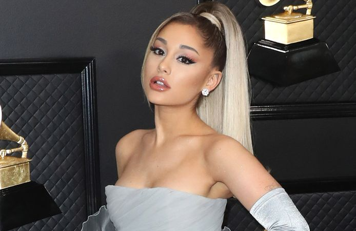

🎶Cantoras internacionais🎶

Ariana Grande começou a carreira ainda na adolescência, quando atuou em um musical na Broadway. Em 2010, estreou na televisão na série Victorious, da Nickelodeon. O sucesso da trilha sonora da série, em que ela também cantava, a ajudou a deslanchar como cantora, o que rendeu a ela um prêmio Grammy.

Taylor Alison Swift é uma cantora, compositora, diretora, instrumentista, produtora musical e atriz dos Estados Unidos da América.Taylor assinou contrato pela gravadora Big Machine Records em 2006 e debutou nas paradas musicais aos 16 anos, com o seu single Tim McGraw, canção dedicada ao cantor que a convidou para abrir seus shows, começando assim sua carreira.